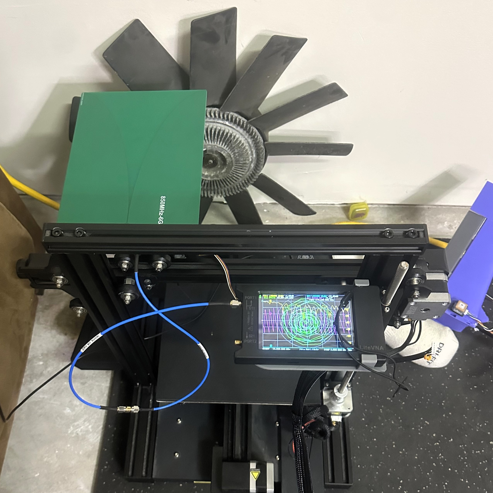
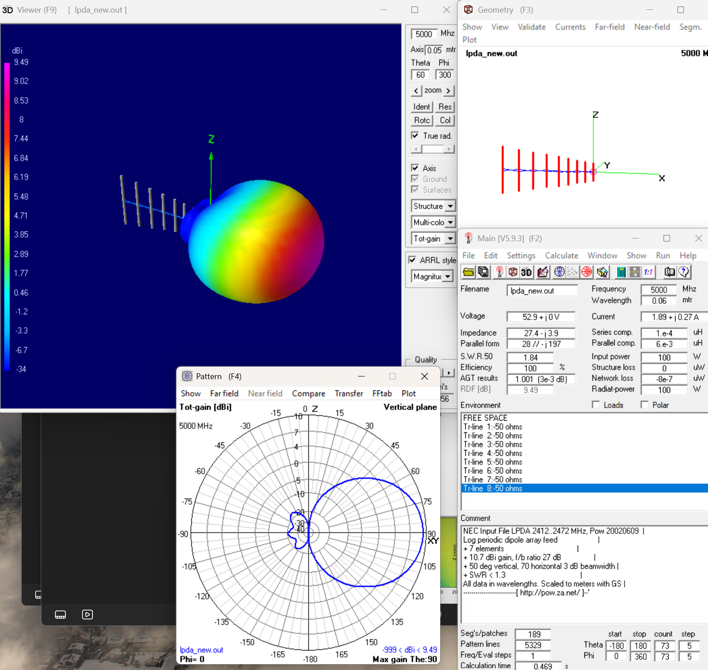
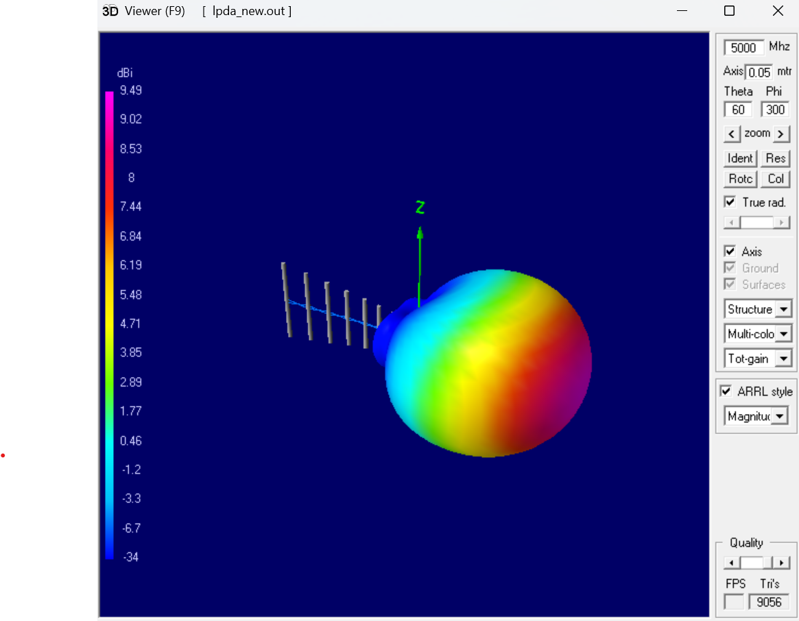
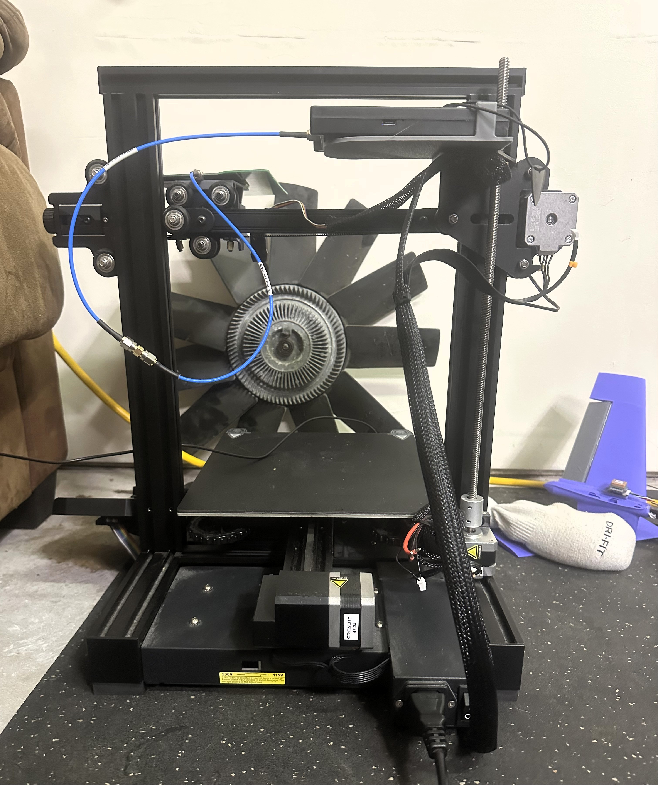
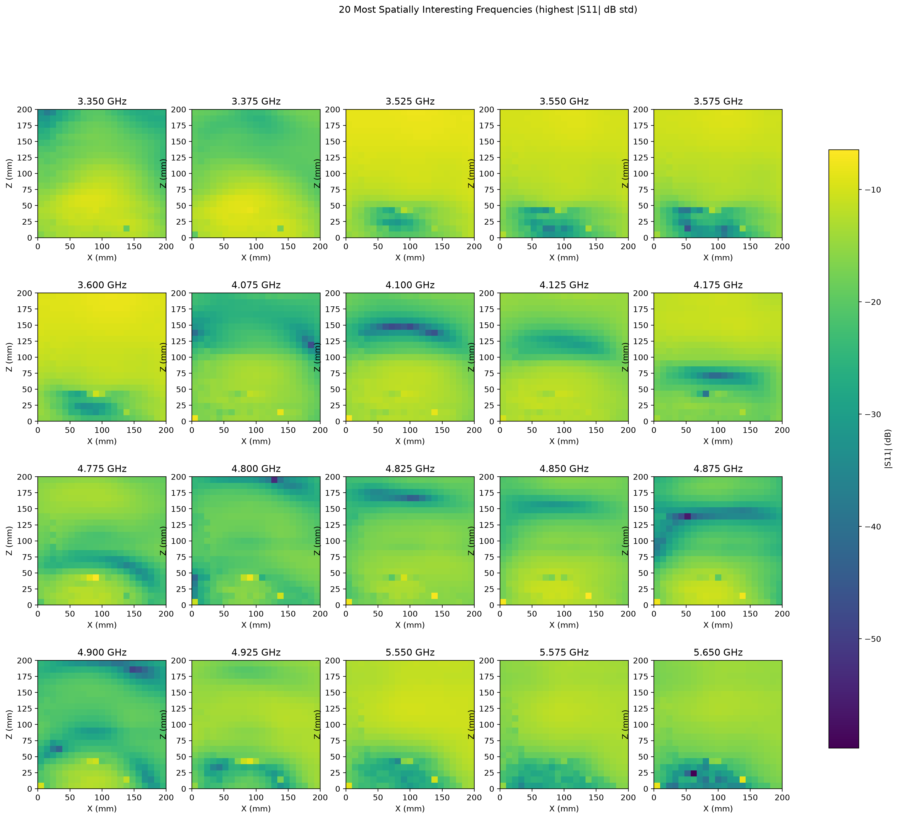

RF Scanner

Figure 1: The scanning stage, built from a repurposed 3D printer, with the antenna under test and a LiteVNA reading live S11 data
This is my first time ever working with RF. I had zero background going
in, so right now this page documents a project mainly aimed at learning.
The scanner sweeps an antenna over a grid in front of a target,
records the reflection coefficient (S11) at every point, and turns that data into
a 2D heatmap showing where the target reflects most strongly. Right now, it yeilds fuzzy images of
a metal fan sitting on my workbench. As I refine the project more, the longer term
goal for this project is to create a low cost medical grade scanner.
These early results are a stepping stone toward higher frequencies and a better
scanner. What I'm actually working toward is a low cost
millimeter-wave reflectometry system for skin lesion screening, something you
could picture at a pharmacy or a kiosk as a quick screening tool, designed to inform users whether they should seek a clinical opinion. The plan is to first get this
scanner solid and prove it can image everyday materials and differentiate between things like drywall, plastic,
and metal, and then move toward finer resolution, wider bandwidth, and higher
frequencies from there.
What's Built So Far
So far I've got a working scanning rig that combines a VNA, a repurposed
3D-printer motion stage, and some custom antenna mounts I designed. I also wrote
the automation and signal-processing pipeline in Python that turns the raw S11
sweeps into 2D spatial heatmaps. Next up I'm working toward 3D image
reconstruction and a custom PCB antenna.
Antenna Design
I started by using a vivaldi antenna purchased from amazon for my first pass on this project.
After getting those results, I think that antenna may not be directional enough to get an accurate image.
It is also huge and has to be far from the object in question, so I am designing a log periodic
dipole array (LPDA) antenna, modeled and simulated in 4nec2. The 7 element
design reaches about 9.5 dBi of gain with an SWR under 1.3 across its band.
I am also designing a casing to minimize S11 reading fluctuation in reading caused by someone moving or walking around in the background during a scan.


Figure 2 and 3: LPDA geometry and simulated 3D gain pattern in 4nec2
The scanner is shown running a Vivaldi antenna right now, covering roughly
850 MHz to 6 GHz. I am prioritizing wide bandwidth antennas to allow me to scan across a wide range without switching antennas.
So far the beam isn't as directional as I'd like, so I'm currently trying out
other antenna designs to get a sharper, more directional result, and ideally
something with an even lower profile than what's mounted on the stage now.
Building the Scanning Stage

Figure 4: The converted gantry used to move the probe antenna in a controlled scan pattern
Instead of building a positioning system from scratch, I converted a used
Creality 3D printer into a motorized 2 axis scanning stage with custom antenna
mounts. The print head got swapped out for the probe antenna, and a coax cable
runs down from the antenna to the LiteVNA, which handles the actual RF
measurement and reports S11 back over its display and data connection. This gives me repeatable, programmable positioning without paying
for a dedicated scanning setup.
Grid Scan

Figure 5: Scan grid overlaid on the target area
For the current data set, I scanned 441 points across a 15 cm by 15 cm grid,
sweeping a wide bandwidth from 1 to 6 GHz at every point. The target was just a
metal fan sitting in front of the scanner, mostly because it has a lot of
distinct geometric features that seemed like a good test for what the imaging
pipeline could recover.
Results So Far

Figure 6: Heat maps of |S11| across the scan plane at the frequencies with the most spatial variation
The processing pipeline turns the raw sweeps into a heat map of reflection
magnitude across the scan plane for each frequency, and ranks the frequencies by
how much their S11 magnitude varies spatially so the most interesting ones are
easy to pick out. None of the resulting images look much like
the fan that was actually sitting in front of the scanner, everything is still
pretty fuzzy, but 4.9 GHz gets closest to matching its shape. Based on this, the antenna and imaging pipeline are on the right track, even though
resolution and directionality still need a lot of work.
Next Steps
In the near term, I'm trying out different antenna designs aimed at getting a
more directional beam and a lower profile, then I want to prove the scanner out
on a few different everyday materials (drywall, plastic, metal) before pushing
toward finer resolution, wider bandwidth, and higher frequencies. Further out,
I'm working toward 3D image reconstruction and a custom PCB antenna, both steps
on the way to the bigger goal: a low cost millimeter-wave reflectometry system
for skin lesion screening.
Path to a Device
Alongside the hardware and signal processing work, I've also been looking into
what it would actually take to turn this into a real device. The goal here is a device meant
for pharmacy or kiosk-style screening, alternatively, a pilot study found that a
device like this could be 98% accurate at diagnosing skin cancer, so longer term,
this technology could help to reduce unneccessary biopsies and aid in clinical diagnosis.
Inspiration
This is the study that made me want to try this in the first place:
Mirbeik-Sabzevari, A. & Tavassolian, N. (2022). Millimeter-wave sensors for high-accuracy discrimination of skin cancer. Scientific Reports, 12. DOI: 10.1038/s41598-022-09047-6. Stevens Institute of Technology.
Mirbeik-Sabzevari, A. & Tavassolian, N. (2022). Millimeter-wave sensors for high-accuracy discrimination of skin cancer. Scientific Reports, 12. DOI: 10.1038/s41598-022-09047-6. Stevens Institute of Technology.